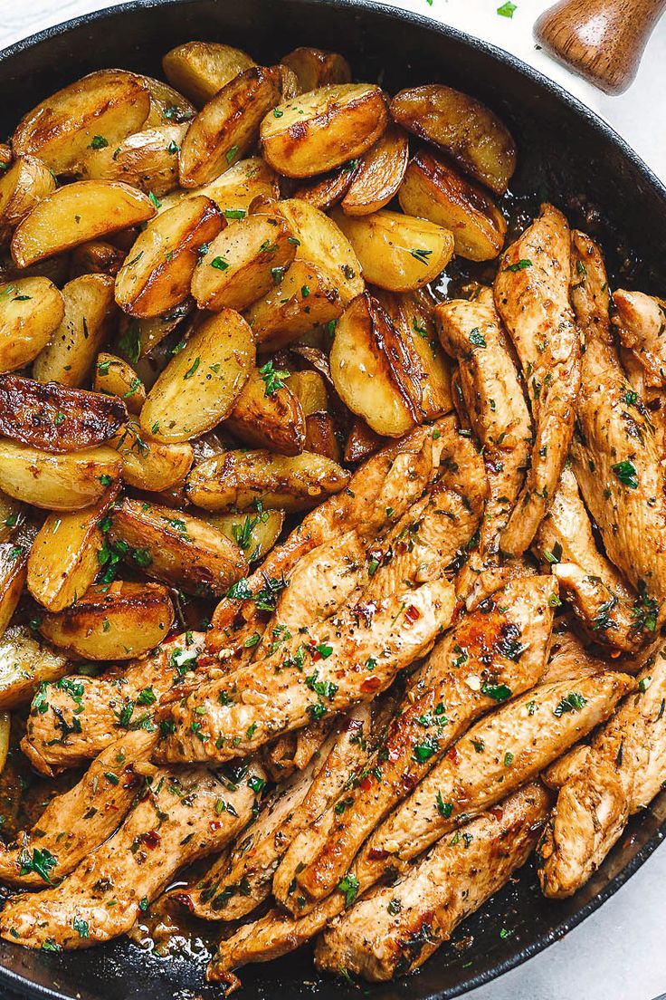

French-Style Chicken And Potatoes

Servings: 4
Time Taken: 20 minutes
Ingredients:
Condensed cream of chicken soup
- 20g unsalted butter
- 2 tbsp plain flour
- 2 tbsp milk
- 1/2 cup Massel chicken style liquid stock
- Large pinch of onion powder
- Large pinch of garlic powder
- Large pinch of dried thyme
- Large pinch of salt
French-style chicken and potatoes
- 2 tsp extra virgin olive oil
- 4 Coles RSPCA Approved Chicken Thigh Cutlets
- 2 garlic cloves, crushed
- 1 brown onion, sliced
- 1/2 cup of water
- 1 cup Massel chicken style liquid stock
- 1/4 cup dijon mustard
- 2 tsp white sugar
- 3 carrots, cut into thick batons
- 500g baby red delight potatoes, halved
- 2 sprigs fresh rosemary
- 2 sprigs fresh thyme, plus extra to serve
Method:
- Make condensed chicken soup: Melt butter in a small saucepan over medium heat.
- Add flour. Stir to create a paste. Cook for 1 minute.
- Whisk in milk until mixture forms a smooth and thick paste.
- Gradually whisk in stock, onion powder, garlic powder, thyme and salt until mixture is smooth.
- Cook, whisking constantly, for 2 to 3 minutes or until mixture thickens. Remove from heat.
- Set aside to cool 10 minutes.
- Preheat oven to 200C/180C fan-forced.
- Meanwhile, heat oil in a large heavy-based flameproof ovenproof dish over high heat.
- Add chicken, skin-side down. Cook for 3 minutes or until skin is light golden. Turn.
- Cook for 2 minutes. Transfer to a plate.
- Carefully drain any excess fat from dish. Return to heat.
- Add garlic and onion. Cook, stirring, for 2 minutes.
- Simmer, stirring, for 3 minutes.
- Add Condensed Chicken Soup, the water, stock, mustard and sugar.
- Stir to dissolve mustard. Add carrot, potato, rosemary and thyme.
- Stir to combine.
- Return chicken to pan. Cover. Transfer to oven. Bake for 30 minutes.
- Remove lid. Bake for a further 20 minutes or until chicken is dark brown and cooked through.
- Stand 5 minutes. Serve sprinkled with extra thyme.